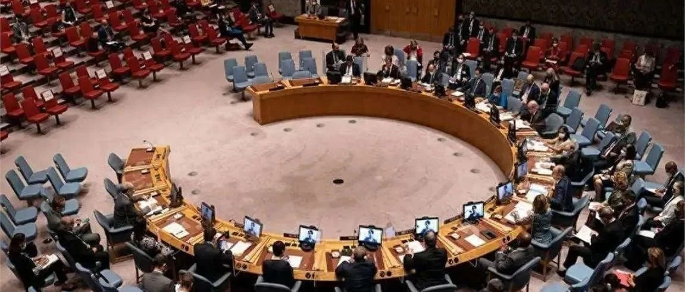

中方:呼吁“阿富汗临时政府”重视国际社会合理关切
9月6日，联合国安理会15个成员国的其中12个国家的12位驻联合国大使发表联合声明，强烈谴责阿富汗塔利班最近颁布的所谓“美德法”，指出该法律进一步侵蚀阿富汗妇女和女孩的权利，并呼吁塔利班将其撤销。中国和俄罗斯则拒绝参与谴责塔利班。
中国拒绝参与联合国安理会谴责阿富汗塔利班活动和声明后，受到国内外广泛表示失望和批评声。
9月18日，中方罕见的进一步批评阿富汗塔利班。当天联合国安理会阿富汗问题公开会议上，中国常驻联合国代表傅聪称：“阿富汗近期颁布的‘道德法’引发国际关注，(中方)呼吁阿富汗临时政府重视国际社会的合理关切，采取措施切实保障妇女和女童的基本权利…希望国际社会…为保障包括女性在内的全体人民权益创造有利条件。 ”
但同时又声称：“上个月阿富汗临时政府迎来执政三周年，面对外国军队仓促撤离留下的‘烂摊子’，阿富汗当局努力稳定安全局势，改善经济民生，加强区域和国际对话合作，这些良好势头来之不易。”
阿富汗塔利班执政后，阿富汗女性不能外出参与工作，不能就读初中、高中与大学，不能露出脸部与头发，不能在公共场合说话、唱歌、笑出声或发出任何声音，不能“非必要”离开家，不能独自出远门，不能进入广场、健身房等“男性专享区域”，不能开美容院或去美容，不能与“非亲人”的男性说话或眼神对视，不能发生婚前性行为。
阿富汗性少数群体也被定义为死刑。包括男女同性恋、双性恋、跨性别者、性别酷儿或变装。